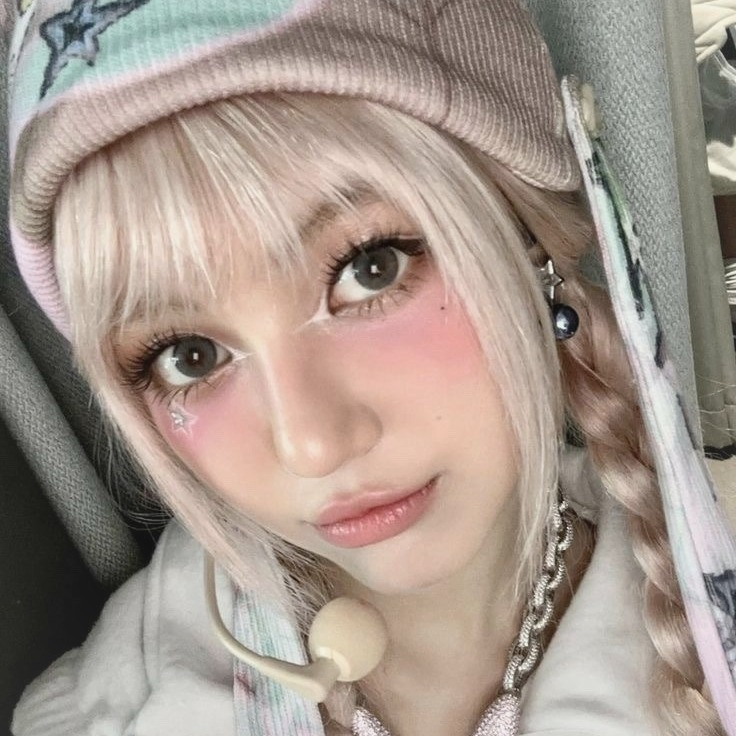
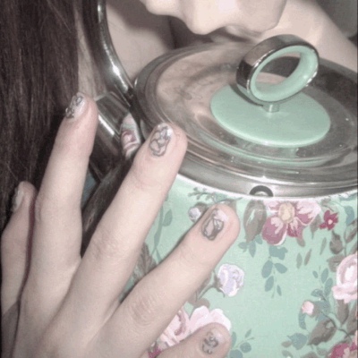

Danielle
Danielle (다니엘) é uma cantora, dançarina, rapper e compositora sul-coreana-australiana. Ela é ex-integrante do grupo feminino NewJeans .
Em 22 de julho de 2022, ela estreou como membro do NewJeans com o single principal "Attention", antes do lançamento do EP de estreia, New Jeans, em 1º de agosto.
Em 29 de dezembro de 2025, a ADOR anunciou que havia rescindido seu contrato exclusivo após a disputa legal das integrantes do NewJeans contra a empresa e que ela deixaria o grupo. A gravadora acrescentou que planejava responsabilizar Min Hee-jin e um membro da família de Danielle pela disputa legal, por aproximadamente 43 bilhões em danos.
Curiosidades
- Seu pai é australiano e sua mãe é sul-coreana.
- Suas inspirações são Beyoncé e Julie Andrews.
- Ela mesma se apelidou de "Vitamina D".
- Ela possui dupla cidadania sul-coreana e australiana.
- Sua idol favorita do K-Pop é IU.
- Seu tipo de personalidade MBTI é ENFP.
- Danielle adora a música do filme musical dramático A Noviça Rebelde (1965) e Julie Andrews, a atriz principal.
- Ela é fluente em coreano e inglês. No entanto, como nasceu na Austrália e passou a maior parte da infância lá, é falante nativa de inglês e está mais familiarizada com a cultura australiana.
- A primeira música que ela praticou como trainee foi "Best Part" de Daniel Caesar.